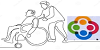

ASSOCIATION DES MERES ISOLEES EN CHARGES D'ENFANTS HANDICAPES (A M I C E H)
On peut être confronté du jour au lendemain à une situation inattendue, une surprise de la vie, un(e) enfant handicapé(e) de naissance ou à la suite d’un accident, ça peut être aussi un adolescent ou un adulte. Dans ces cas là, les premiers concernés sont les familles. Il faut faire garder l’enfant pour vaquer à ses occupations quotidiennes, pour aller au travail par exemple, pour faire ses courses, pour faire certaines sorties utiles ( voir un médecin, ou autres), certaines démarches par exemple. Dans tous les cas, on a besoin de soutien, d’information pour certaines démarches administratives pour la prise en charge de l’enfant handicapé, pour sa scolarité, pour son insertion sociale. C’est un parcours de combattant pour la meilleure réorganisation de notre quotidien en y incluant la nouvelle donne. Cette expérience vécue m’a ouvert les yeux, et m’a rapproché de certaines femmes qui doivent affronter cette situation seules sans le soutien de leur conjoint dont certains abandonnent même le foyer conjugal pour ne pas faire à la situation. J’ai donc décidé de créer une Association pour partager mes expériences et pour apporter mon aide aux Mères Isolées en Charge d’Enfants Handicapés(AMICEH).
L’objectif visé par AMICEH est de soutenir les femmes isolées confrontées aux situations d'enfants handicapés, mais également des familles ayant un enfant handicapé, des handicapés eux-mêmes majeures ou adultes par diverses initiatives dont l’ensemble constituera nos offres de services, nos actions, nos activités. Nous aurons l’occasion de les détailler dans la rubrique intitulée «ACTIVITÉS »...